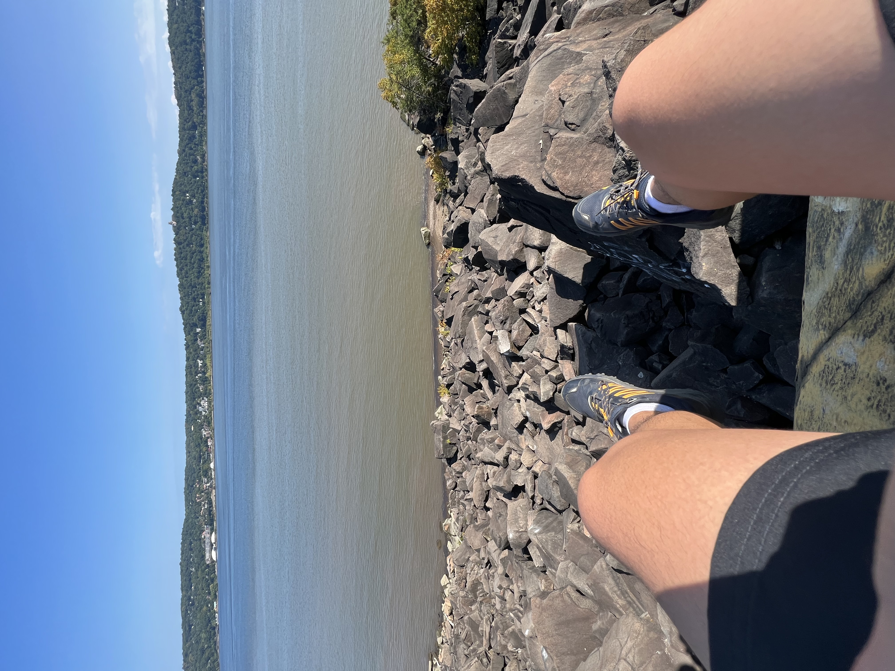
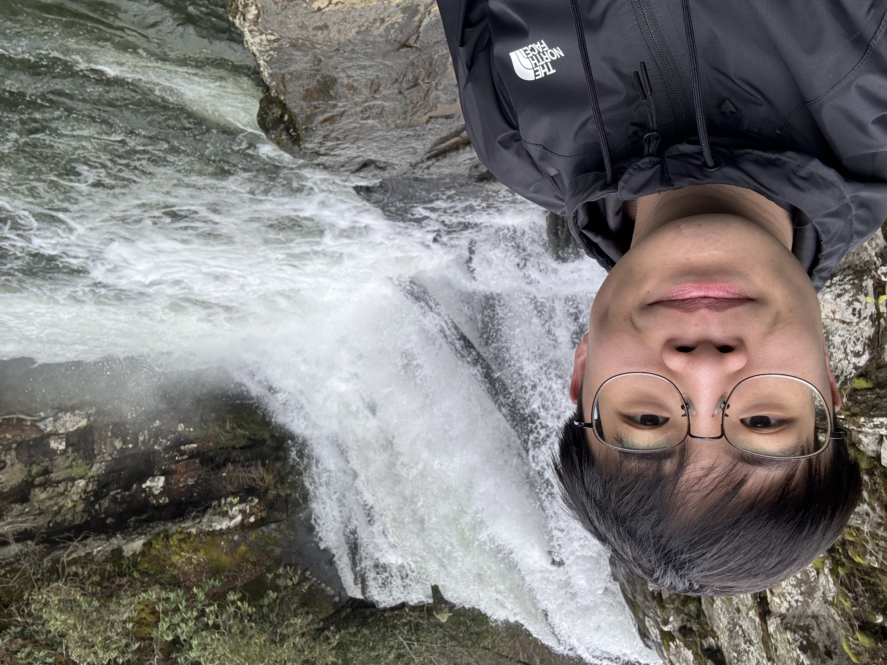
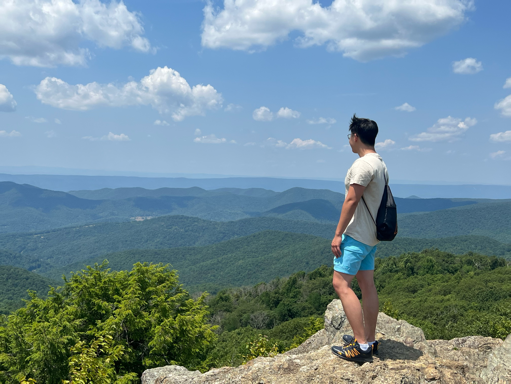
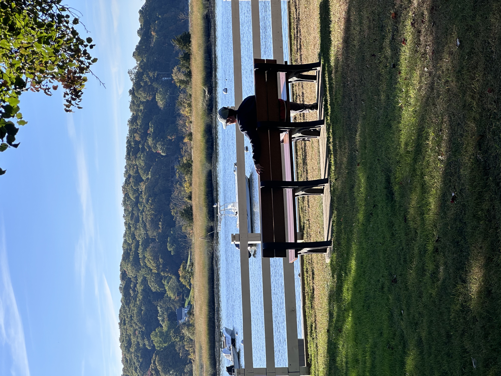
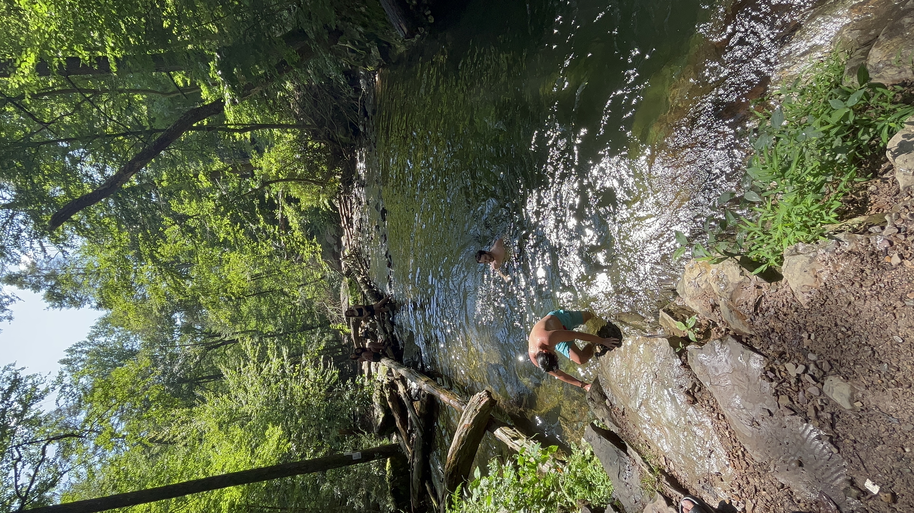
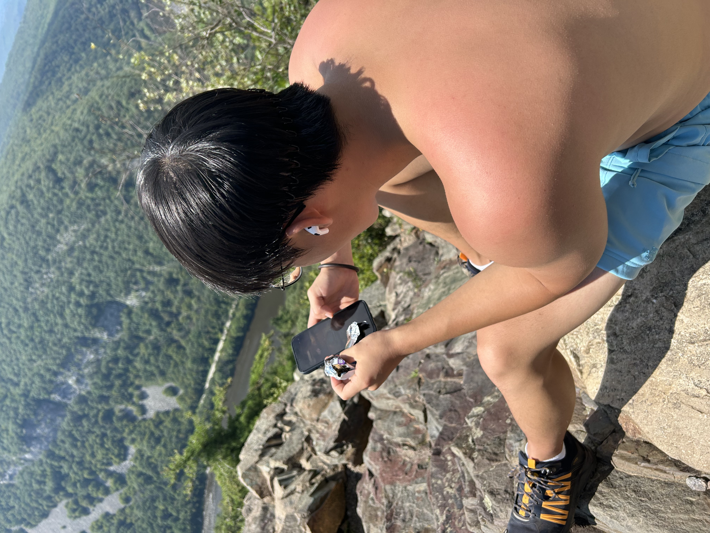

Completed trails
- Mount TammanyDelaware Water Gap, NJ
- Stairway to HeavenVernon, NJ
- Breakneck RidgeHudson Highlands, NY
- Palisades Interstate ParkNJ / NY
- Sourland MountainHillsborough, NJ
- Rutgers GardensNew Brunswick, NJ
- Hemlock FallsSouth Mountain Reservation, NJ
- High Point State ParkSussex, NJ
- Bushkill FallsLehman Township, PA
- Whirlpool State ParkNiagara Falls, NY
- Kaaterskill FallsHunter, NY
- Mohonk PreserveNew Paltz, NY
- Mount Lafayette & Tuckerman RavineWhite Mountains, NH
- Arethusa FallsCrawford Notch, NH
- Quail TrailheadNew Jersey
Gallery







